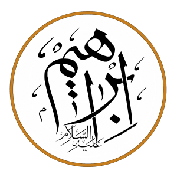

Pelek'in oğlu Reu doğdu, Reu'dan Seruk, Seruk'tan da Nahor dünyaya geldi. Nahor'dan ise İbrahim aleyhisselamın babası olan Teraha dünyaya geldi.b

İBRAHİM (A.S.) KISSASI
قُلْ صَدَقَ اللَّهُ ۗ فَاتَّبِعُوا مِلَّةَ إِبْرَاهِيمَ حَنِيفًا وَمَا كَانَ مِنَ الْمُشْرِكِينَ
«De ki: “Allah doğru söyledi. Öyleyse Allah'ı bir tanıyan (Hanif)ler olarak İbrahim'in milletine uyun. O, müşriklerden değildi”.» (Âl-i İmrân sûresi, 3/95)
İBRAHİM PEYGAMBERİMİZİN BABASI
Terah'ın İbrahim, Nahor ve Haran adında üç oğlu oldu. O zamanlar Kildanilerin Ur isimli şehrinde yaşıyorlardı. Haran evlenerek Lût isimli bir oğla, Milka ve Yiska isimli iki kıza sahip oldu. Daha sonra Haran, henüz babası sağken doğduğu ülkede, Ur şehrinde öldü. Hz. İbrahim (a.s.) de evlendi. Fakat karısı Sara hiç hamile olamıyordu. Bir gün Terah, çocuklarını alıp Kenan diyarına doğru yola çıktı. Ortada çöl olduğu için onlar önce kuzeydeki Harran şehrine varıp, sonra güneye Kenan'a gitmek zorundaydılar. Fakat Harran'a geldiklerinde, orada kalıp yerleştiler.
Hz. İbrahim'in (a.s.) çocukluğu
Birçok kitapta yazdığı üzere, İbrahim aleyhisselamın kavmi cansız putlara tapar, tek olan Allah'ı kabul etmezdi. Hazreti İbrahim ise: “Dünyanın bir sahibi var mı? Bütün bu alemlerin rabbi kimdir?” gibi sorulara cevap arardı.
Allah'ı arayış
Hz. İbrahim (a.s.) «Üzerine gece karanlığı basınca bir yıldız gördü ve dedi ki: “Bu benim rabbimdir.” Fakat (yıldız) kayboluverince: “Ben kaybolup gidenleri sevmem” demişti. Ardından Ay'ı doğarken görünce: “Bu benim rabbim” dedi.»c (Fakat Ay da batıp gitti.) «Ay da batınca: “Rabbim bana doğru yolu göstermezse elbette yoldan sapmışlardan olurum” dedi. Sonra Güneş'i (etrafa ışıklar saçarak) doğar görünce: “İşte bu benim rabbim, bu en büyük.”» dedi. Ama o da kayboluverince,d bunların hepsini yaratan ve bunlardan üstün bir zat olması gerektiğini düşündü ve sonra dedi ki: يَا قَوْمِ إِنِّي بَرِيءٌ مِمَّا تُشْرِكُونَ إِنِّي وَجَّهْتُ وَجْهِيَ لِلَّذِي فَطَرَ السَّمَاوَاتِ وَالْأَرْضَ حَنِيفًا ۖ وَمَا أَنَا مِنَ الْمُشْرِكِينَ «Ey kavmim, doğrusu ben sizin şirk koşmakta olduklarınızdan uzağım. Gerçek şu ki, ben bir Hanif olarak yüzümü gökleri ve yeri yaratana çevirdim. Ve ben müşriklerden değilim.» . (En'âm sûresi, 6/76-79)
Sonra günlerden birinde Allah (azze ve celle) ona vahyederek seslendi: أَسْلِمْ «Eslim» dedi. Anlamı: «Bana teslim ol.» idi. İbrahim aleyhisselam da: أَسْلَمْتُ لِرَبِّ الْعَالَمِينَ «Eslemtü li rabbil âlemîn» e yani: «Alemlerin Rabbine teslim oldum» diyerek yanıtladı. Bundan sonra putlara tapan babasını ve kavmini, putlara tapmayı bırakıp, yegane Allah'a, yerin ve göğün sahibine dönmeye davet etti.
PUTLARI PARÇALAMASI
«Hani, babasına ve kavmine: “Siz neye kulluk ediyorsunuz?” demişti. “Putlara kulluk ediyoruz ve etmeye de devam edeceğiz.” demişlerdi. Dedi ki: “Peki, dua ettiğiniz zaman onlar sizi işitiyorlar mı? Ya da size bir yararları veya zararları dokunuyor mu?” “Hayır” dediler. “Fakat biz atalarımızı böyle yaparlarken bulduk”.» f
Bir gün bayram vardı. Herkes bayrama gittiği sırada, İbrahim (a.s.) balta alıp puthaneye gitti ve putların önünde duran yemekleri görüp dedi ki: «“Yemek yemiyor musunuz? Size ne oluyor ki konuşmuyorsunuz?” Derken onların üstüne yürüyüp sağ eliyle bir darbe indirdi.» g
Kur'an-ı Kerîm, Enbiya suresinde şöyle nakleder: «Sonunda İbrahim onları paramparça etti, en büyükleri hariç...» h Ardından İbrahim aleyhisselam baltayı büyüğünün boynuna asıp puthaneyi terk etti.
Biraz vakitten sonra insanlar bayramdan gelip putların kırıldığını gördüler ve öfkelenip İbrahim aleyhisselama geldiler: «Ey İbrahim, bunu ilahlarımıza sen mi yaptın?» İbrahim (a.s.) cevap verdi: «Hayır! Bunu şu büyükleri yapmıştır. Konuşabiliyorlarsa, onlara sorun bakalım!» i dedi alay ederek. Sonra onlar: “Putların konuşamayacağını biliyorsun ki” dediler. Bunun üzerine İbrahim (a.s.): «Öyleyse neden Allah'ı bırakıp da sizlere yararı ve zararı dokunmayan şeylere kulluk ediyorsunuz?» dedi.
Resûlallah ateşe atılıyor
Daha sonra, o kavmin kralıj Hz. İbrahim'i (a.s.) huzuruna çağırtıp: “Senin tanrın kim? Hiç onu gördün mü?” diye sordu. Allah'ın Resulü cevapladı: رَبِّيَ الَّذِي يُحْيِي وَيُمِيتُ «Benim tanrım diriltir ve öldürür.» Bunun üzerine kral: “Bunu ben de yapabilirim. İki insan getirilse, birini öldürür, birini ise affederim.” dedi. İbrahim aleyhisselam: فَإِنَّ اللَّهَ يَأْتِي بِالشَّمْسِ مِنَ الْمَشْرِقِ فَأْتِ بِهَا مِنَ الْمَغْرِبِ «Şüphe yok, Allah Güneş'i doğudan getirir, (hadi) sen de onu batıdan getir.» k Kral cevap veremedi, susup kaldı.
Bundan sonra kral, Allah Resûlü'nü ateşe atarak öldürmeye karar verdi.l Her şey hazır olduğunda, büyük bir ateş yakıp, Hz. İbrahim'i (a.s.) alevlerin içine atacaktı.
KISSADAN HİSSE
İbrahim aleyhisselam Allah'a tevekkül ettiği için, kendisini ateşte yakacaklarını söylemelerine rağmen imanından vazgeçmedi. Böyle durumlarda her bir mü'min, ümidini Allah'ın nusretine bağlamalı. Eğer Allah isterse, ateş belasından da su belasından da kurtarır. Fakat kurtarmasa bile bizim imanımızı elimizden bırakmamamız lazım.
İbrahim aleyhisselam alevlere atıldığında Allah-u Teâlâ onu muhafaza etti. Allah (azze ve celle) ateşe emretti: قُلْنَا يَا نَارُ كُونِي بَرْدًا وَسَلَامًا عَلَىٰ إِبْرَاهِيمَ «Ey ateş! İbrahim'e karşı serin ve selamet ol!» m Her ne kadar kavmi, Hazreti İbrahim'e kötülük yapmayı istemiş olsa da Allah, onları kaybedenlerden yaptı.